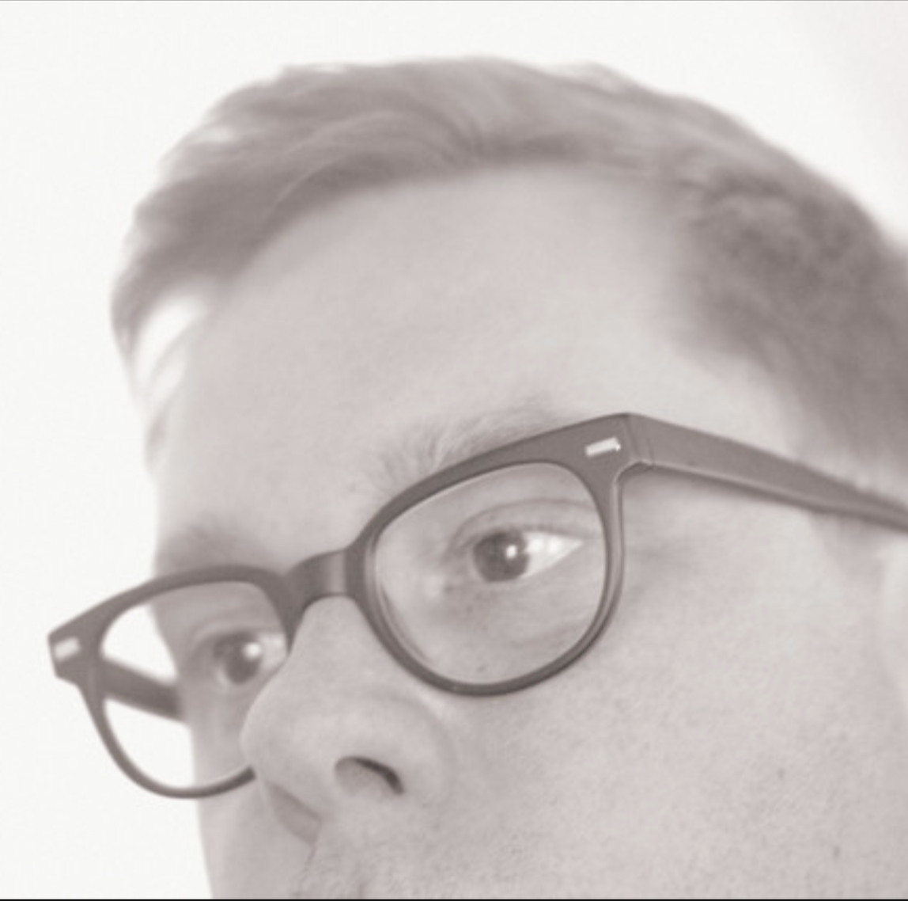

Christopher Bissonnette
I am excited to share Issue 2 of Oswin Journal. This project really began when I had a gallery in Canada called Oswald Collective. We featured the best of the up and coming talent, but my interest lay more and more in the connection between sound and visual. Not in the music video way, which ironically I've never been that interested in. It's how sound and visual have a way of syncing naturally on their own.
This became apparent a month before moving to Sydney. We'd sold off all our furniture and all we had left was lawn chairs, our stereo and a TV. I began becoming obsessed with the Apple TV screensavers and pairing them to electronic music, more specifically H. Takahashi. One video that resonated the most was an aerial shot of LAX. Parked planes, some getting ready for take off. The pairing had a huge impact on me. Something connected. And it never stopped.
So Issue 2 just launched, and this issue is with Chris Bissonnette. For me, getting to work with him was such an honour, and the way we came to meet I found extraordinary.
We first met many years ago in Detroit on a night that has stuck with me my entire life. I was out with friends at a Poor Boy party. These were five-dollar parties held usually in the abandoned industrial area near downtown, and the way one got to these parties was to firstly know where the parking lot was, then catch a van or small bus to the actual location. This backstory is important: that night was, I believe, one of the biggest raids on a rave Detroit has ever seen. Police in riot gear with batons started clubbing people who were dancing. The scene turned into chaos. A few of my friends decided to find an alternative exit. We kicked down a door and ran for it. But because we'd bused from the parking lot we didn't know where we were going. Luckily, I didn't take acid. Like most of us did. We found the parking lot eventually, but our friend who drove had been arrested at the party. So we were stranded. Moments later, a line of police arrived and surrounded the lot. They were fully armed and ran to where we were hiding, guns drawn. We all lined up against the fence, hands up, legs spread. One cop took a guy to the ground and kicked him. They joked that they've been known to slip on the trigger and no one would know. People were so scared they peed themselves, to which the cops made a spectacle of them. We were released as there was no proof of us being at the party, but we were told to leave the lot or face trespassing charges.
So what remained of our group started to walk back to Canada, and Detroit during this period was incredibly dangerous. This is where I met Chris. He was like a miracle. Arrived in a car that was circling the party, wondering what the fuck was going on. My friend knew Chris and we got a ride back. I sat in the back so Chris never got a look at who I was. But this story has stuck with me. It was both the most terrifying experience and also the most enlightening. I should say this: we were all white kids partying in a place that once housed jobs for a lot of Detroiters. A lot of them are Black. The cops were all Black. I totally get why they hated us. Even though our intentions weren't to be harmful, I could see how complicated Detroit's history was.
I would never forget Chris's face. He bailed us out of a jam that could have ended really badly.
It wasn't until 2024 that I met him again. This time, at an art show I was hosting in Windsor. We chatted and had lots in common. I knew I had met him before, and I went through all the possibilities. Regardless, he reminded me of this energy that one only finds in Windsor. Windsor is for me one of the most interesting cities in Canada. Its connection to Detroit, but still distinctly its own flavour. Chris has that flavour. A creative intellect. I get homesick for that energy.
Then it dawned on me. It was the guy who saved us. It flashed in my mind and I was certain it was him. I wrote him a quick text and indeed, that was how I knew him.
He bought a painting from me and gave me his latest album on CD. I connected with it on a really personal level. I picked four tracks for the website. All of his work deserves attention, but Orffyreus Wheel, Undertow and Overture I must have listened to over a hundred times. There's something in those pieces that doesn't let go of you. They loop in your head the way the footage loops on screen. Slow, hypnotic, inevitable.
That's Issue 2. Headphones on. Lights off. If you have a projector, even better. Your living room becomes the installation.
oswinjournal.com
About Issue 2
A little about the pairing of visuals with Chris's music. His work felt similar to peeling an onion. It kept reinventing itself over and over and I got completely lost inside the world he created.
When I first got started on this issue, I began with something that had been on the back of my mind for years. To work with video of a figure skater in a full spin, then loop that. It worked as good as I imagined it would, hypnotic and transcending. But the footage below opened up the music in a different way.
The found footage is taken from interviews of bankers on Wall Street. I wasn't so much interested in the person being interviewed. I was more interested in the people in the background. This is a recurring theme in my work. I went through a long stint with photography and was particularly drawn to urban areas where lots of people were coming and going. I made myself available to it, almost being like a stage, with actors arriving and leaving as if it were a performance.
This footage I have watched over and over. Each time I notice something else. It made me hear Chris's music differently. And this is what Oswin Journal is. Opening up music and visuals to experience both as one.
The Interview
Many people who live and breathe jazz claim the golden era was the late '50s. Where on the timeline do you think we are with electronic music? Has it peaked, or is it still building? Where is it all going?
I feel the term "electronic music" is ultimately to be too broad at this point. In the late 60's and early 70s there was a sense that electronic instruments fit into a clear category. There was fear that they would wrongly replace real instruments or even musicians (The Beatles' use of the Mellotron on 'Strawberry Fields Forever'). And that trend seemed to continue into the 80s with a well-defined delineation of synth pop and psych rock's usage of synthesizers and drum machines etc. But the practice of electronic instruments and methods in production are utilized in almost all popular music today. The technology is inseparable from the process and therefore not truly electronic music in a purest sense. So, I guess in very strict terms, the golden era of electronic music has passed. In the 90s I had a narrower vision of what I believed electronic music production should look like. I was ultimately (save for a few exceptions) exclusively listening to electronic music, like techno and sample based experimental music. Since then, my production methods have evolved to include more traditional instruments, although I'm not using them in a conventional manner. And as I have grown older, I have lost touch with the multitude of genres that have splintered. Black MIDI? I had no idea. There are now hundreds of subgenres of electronic music. And with production methods crossing so many categories, hybridizing and evolving so quickly, it suggests that we are well past the golden era and deeper into uncharted territory.
What's a piece of art from a completely different medium that shaped how you hear things?
During a brief gallery tour in Toronto during my art school years, I encountered an exhibition that profoundly altered my understanding of contemporary art. The exhibition was held at The Ydessa Hendeles Gallery and featured a collection of works by Bill Viola, Gary Hill, and James Coleman. Ydessa had modified the gallery's interior structure to accommodate the artworks. This is where I experienced Bill Viola's Arc of Ascent. The installation comprised a synchronized multi-channel video projected onto a suspended 22-foot translucent scrim. The action depicted, in extreme slow motion, was that of a diver plunging into dark water and subsequently ascending to the surface. The three-second dive is slowed to a lengthy seven minutes, creating a sense of tension as the suspended figure gradually descends on the screen. The audio is also slowed to synchronize with the image on the screen. The sound consists of a thunderous wave of bass and noise, creating a powerful visceral experience. In that moment, I realized how the image was significantly influenced by the presence of the sound. This was not music or sound effects but an aural texture designed to challenge viewers' perceptions. From that point on, I developed an understanding that sound art could be atonal and experiential without the need for elaborate context or extraneous meaning.
You've spent your life on the border, Windsor and Detroit — two cities with different energies, but there is something very unusual about Windsor. How do you see this connection between the two places? How has it shaped how you make music?
In the early 90s, I spent a considerable amount of time attending warehouse parties and shopping for music at local record shops in Michigan. Detroit has played a significant role in shaping my formative years, providing me with techniques and inspiration. However, the way I currently create music has undergone a significant transformation over the years. Detroit remains an important destination, and it has undergone exponential gentrification and development over the past 25 years. In contrast, Windsor has largely remained unchanged and could potentially learn from Detroit's transformation. Windsor is a border anomaly, and Michiganders regard it like a suburb of Detroit. There are distinct cultural differences, and I think it's important for us to maintain our identity. We really aren't "South Detroit", despite what the Journey song suggests. Nevertheless, the two cities will continue to have a symbiotic relationship, and I hope that this will only improve, despite the current political tensions between the countries.
What does your process look like when you're starting something new? Does it begin with a sound you've heard out in the world, or is it more about experimentation once you're in the studio? There's a loneliness to your music that I'm drawn to — not sad, but solitary. Where does that come from?
I rarely step into the studio with a clear vision of what I want to create. While I may have a general idea, I mostly begin with experimentation. Some days, I focus on creating patches that I can use later, while other sessions involve composing and mixing. Over the years, I've become more comfortable with my process, allowing errors in the work to become part of the final product. There are times when it is essential for me to be meticulous, and other times when I need to cut the track loose and understand what the music has become. I don't start a track with the intention of producing something melancholic, but it often ends up being that way. I'm not a dark person, but I find that the process of sound production is cathartic. Perhaps there's a psychological explanation for how I end up with sad sounds. I'm not sure I want to find out.
Final question: what are you listening to?
This is my "Best Of" list for 2025. Not everything on my curated lists is a widely lauded success, but there is most often something about a release that I find interesting or unique.